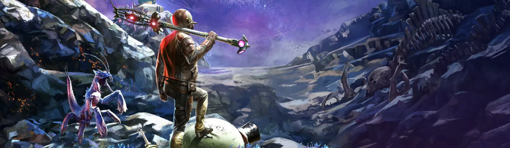

📚 Indicações de RPG
Aqui você encontra recomendações de RPGs nacionais e internacionais para começar a jogar ou conhecer novos sistemas. Selecionamos alguns dos sistemas mais populares e interessantes, desde jogos simples até aventuras complexas.


Aqui você encontra recomendações de RPGs nacionais e internacionais para começar a jogar ou conhecer novos sistemas. Selecionamos alguns dos sistemas mais populares e interessantes, desde jogos simples até aventuras complexas.
Um dos RPGs brasileiros mais famosos. Ambientado no mundo de Arton, Tormenta20 é um RPG de fantasia medieval cheio de heróis, monstros e magia. Ideal para quem gosta de aventuras épicas.
RPG focado em investigação sobrenatural e terror. Os jogadores enfrentam criaturas e mistérios ligados ao paranormal. Perfeito para campanhas narrativas e suspense.
Um sistema simples inspirado em animes e jogos. É fácil de aprender e ótimo para iniciantes. Ideal para aventuras rápidas e criativas.
O RPG mais famoso do mundo. Os jogadores vivem aventuras em mundos de fantasia medieval cheios de monstros e magia. Um ótimo sistema para iniciantes e veteranos.
Um RPG de terror investigativo inspirado nas histórias de Lovecraft. Os jogadores investigam mistérios antigos e enfrentam horrores cósmicos.
Um RPG de fantasia com muitas opções de personagens e regras detalhadas. Indicado para jogadores que gostam de personalização.